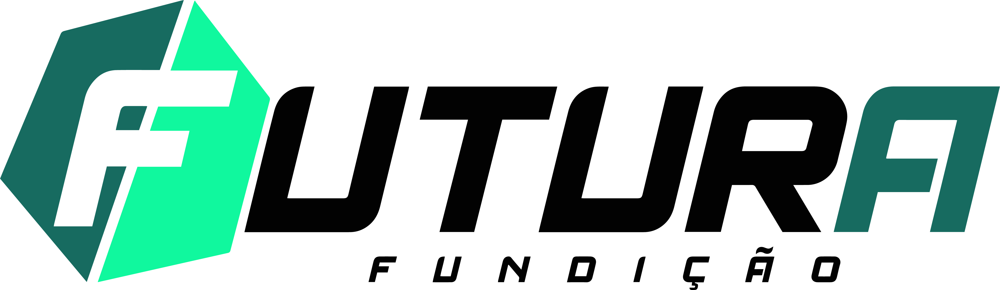
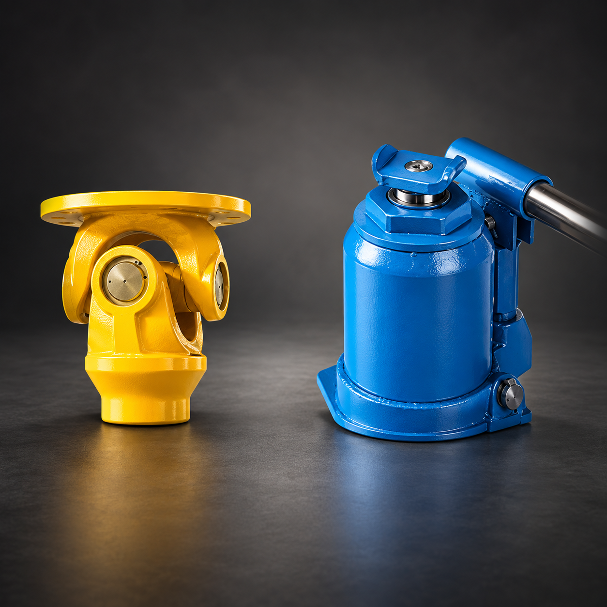
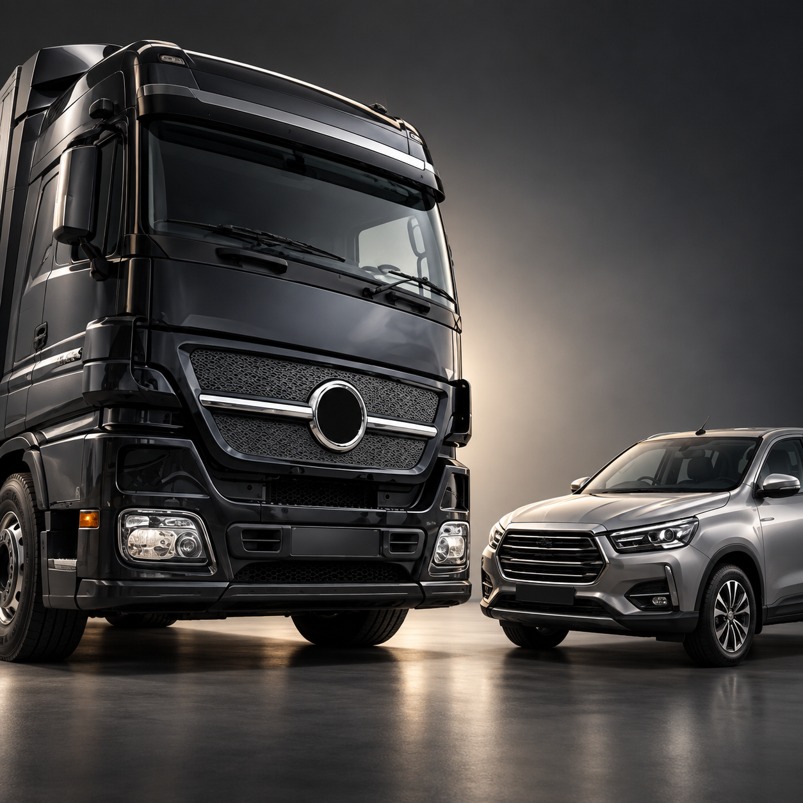
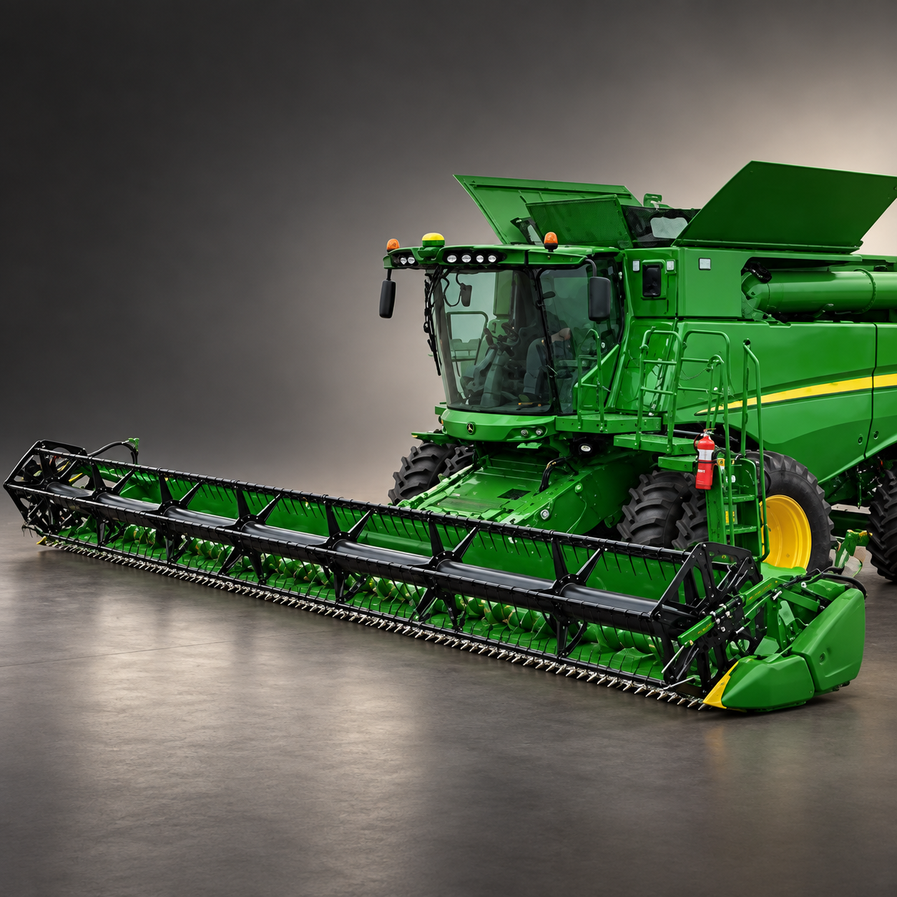
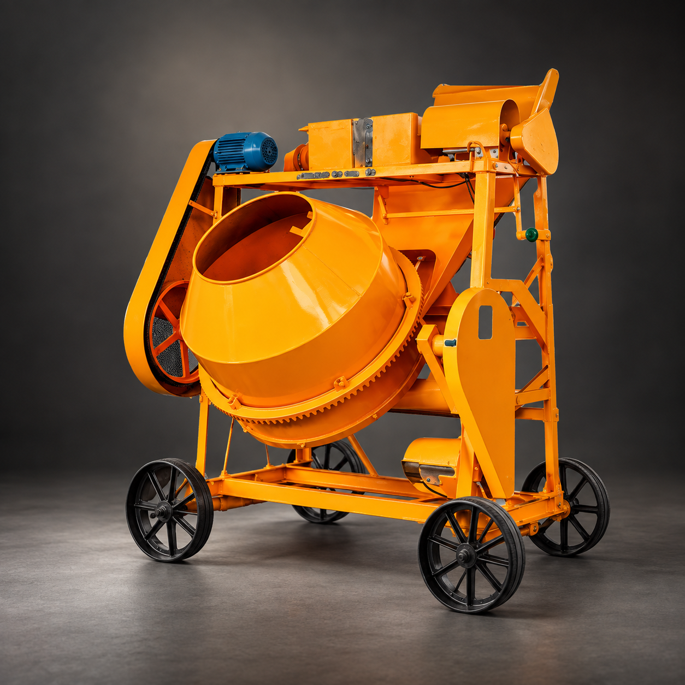
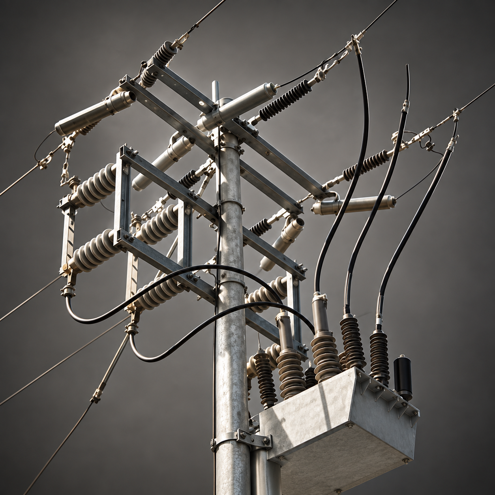
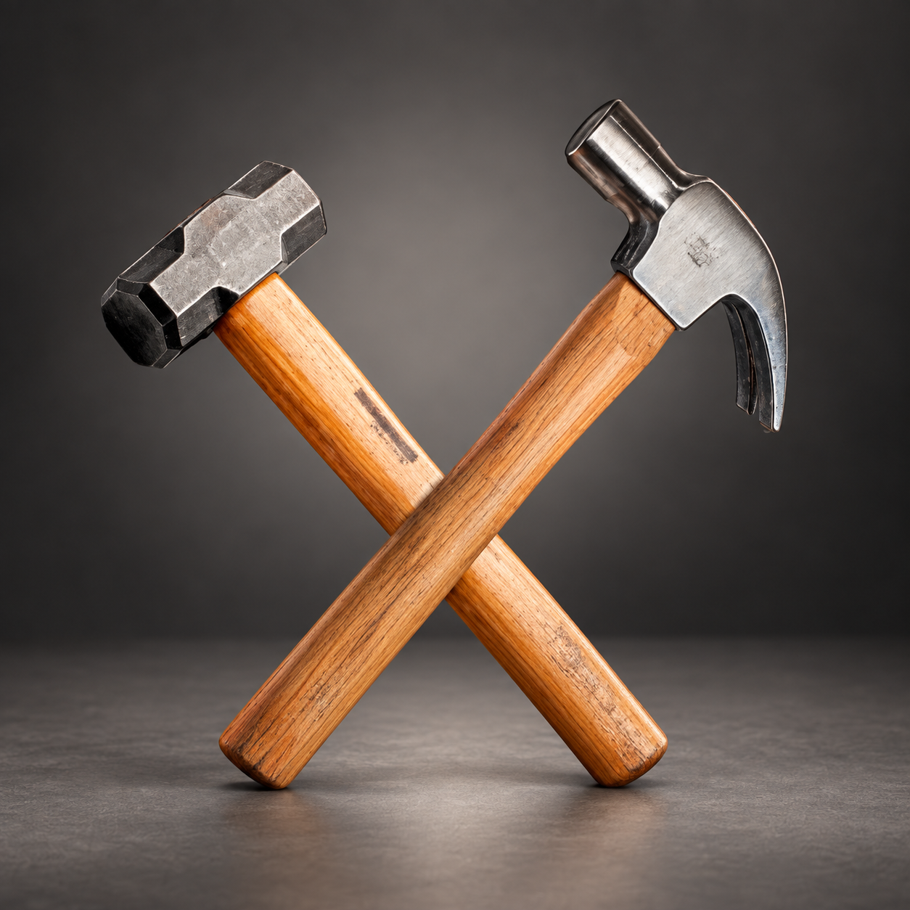

Capacidade produtivaOperação contínua
380ton/mês
Estrutura dimensionada para atender diferentes setores com escala e previsibilidade.

Solicitar orçamentoComponentes fundidos que transformam projetos exigentes em soluções confiáveis para a indústria.

Desde 2004, a Futura Fundição evolui em Araquari, Santa Catarina, movida por tecnologia, melhoria contínua e relações que atravessam toda a cadeia produtiva.
Do desenvolvimento à expedição, unimos conhecimento técnico e consistência para criar peças preparadas para desafios reais.
Conheça nosso processo ↗Uma operação completa, da moldagem ao pós-venda, preparada para desenvolver e produzir com controle.
Estrutura dimensionada para atender diferentes setores com escala e previsibilidade.
Sopradoras automáticas para repetibilidade, produtividade e controle do processo.
Tecnologia aplicada ao controle e à eficiência da produção.
Experiência aplicada a diferentes mercados, com a flexibilidade que cada projeto industrial exige.

02
03
04
05
06Explore uma seleção de componentes produzidos para aplicações industriais exigentes.
Uma jornada produtiva orientada por precisão, rastreabilidade e compromisso com a aplicação final.
Da análise do projeto ao acabamento, cada etapa combina estrutura própria, parceiros qualificados e controle de qualidade.
Atendimento técnico para transformar a necessidade do cliente em produto.
Sopradoras automáticas trazem estabilidade e repetibilidade ao processo.
Forno à indução e ensaios técnicos acompanham a qualidade do metal.
Jateamento, controle final, logística e pós-venda coordenados até a entrega.
O metal ganha forma.
Seu projeto ganha futuro.
COMPROMISSO QUE SE TRANSFORMA EM RESULTADO.
Conte o que você precisa. Nossa equipe entra em contato para entender sua aplicação e construir a solução ideal.
Comercial disponívelFale diretamente com André ou Edson.
Encontre rapidamente a área que você procura.